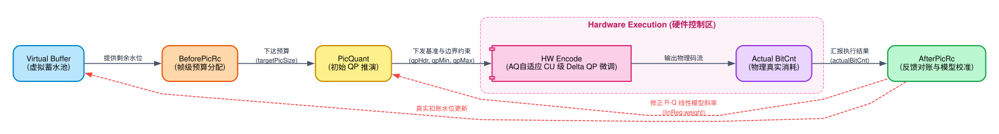

码率控制 (Rate Control) 底层架构拆解
Algorithm & Hardware Co-Design
1. 概念背景与核心挑战：为何需要码率控制及 HRD 物理推演
在视频编码系统中，如果编码器“任性”地追求极致且恒定的客观画质（即采用 Constant QP 模式），会导致一个致命系统问题：视频码流的瞬时比特率（Bitrate）将产生不可控的剧烈波动。
- 信源的天然非平稳性 (Source Non-stationarity)：视频流中交织着完全静止的背景帧（极易压缩，体积微小）和充满剧烈运动、复杂纹理的爆炸帧（极难压缩，体积庞大）。这导致纯 CQP 编码输出的码流呈现出极度不规则的 VBR（Variable Bitrate）特征。
- 物理信道的刚性约束 (Channel Constraint)：无论是网络直播的带宽上限，还是物理存储介质（如 DDR 带宽、蓝光光盘读取率）的吞吐能力，物理传输信道通常被建模为一个具有硬性上限的 CBR (Constant Bitrate) 管道。
当极度抖动的“生产端”遇到绝对刚性的“消费端”时，冲突便不可避免。码率控制（Rate Control）的作用，就是作为一个动态的全局协调者，在带宽红线、解码器物理缓存（DPB/VBV）与最终主观画质之间寻找最优解：通过在复杂场景中动态调高 QP（牺牲局部细节），来压制突发的大体积帧，实现“削峰填谷”，最终确保码流能够平稳、安全地穿越受限的物理信道。
在深入 C-Model 公式之前，我们通过一个实时动态推演微件来揭示码率控制（RC）的根本物理意义：在信道恒定注入的情况下，如何应对解码器的离散抽取（即 HRD Virtual Buffer 的水位挑战）。
1. 网络信道以恒定的速率（如 +5.0%）向 Buffer 中注入比特。
2. 解码器以固定的帧率（如 30fps）从 Buffer 中瞬间抽取一帧的数据块。
3. Underflow (饿死)：如果在“无 RC 模式”下突发复杂场景，帧体积暴增，解码器一次性抽走巨量数据，水位瞬间归零，解码器由于没有完整帧可解而直接卡死。
4. Rate Control 的意义：侦测到水位下降时，强制拉高 QP，压榨画面细节以换取帧体积的骤减，从而让信道注入速率超过抽取速率，硬生生把水位拉回安全线。
2. 核心状态机与软硬件协同 (Core State Machine & Soft/Hard Co-design)
在底层的 C-Model 中，码率控制绝非一个简单的 $D+\lambda R$ 公式，而是一个极其庞大的前馈分配与反馈修正闭环系统。

🔍 状态机深度解剖：软硬件的数据交互与 QP 控制本质
您提到的“本质是在调整 CU 的 QP 吗？”直击了问题的核心！这个状态机的流转，本质上是软件层面的全局规划与硬件层面的 CU 级微调的精妙配合。具体数据流转与硬件映射如下：
[步骤 1] 帧级目标分配 (BeforePicRc)
软件侦测 Virtual Buffer 剩余水位并结合 GOP 权重计算可用字节。计算公式如下：
公式释义：$\mathcal{B}_{pic}$ 是单帧理论均值，扣除 I 帧的超额欠款 $\mathcal{B}_{intra}$ 后，加上历史窗口内的累计误差分摊 $\frac{\Delta_{error}}{W_{rc}}$。$\mathcal{C}_{min}$ 为极小保底值（如 96 bits + CTB 数量）。
📉 沙盘案例 (Numeric Example)：假设单帧均值 $\mathcal{B}_{pic}=50KB$，但之前刚压完一个复杂的 I 帧导致欠款 $\mathcal{B}_{intra}=150KB$，且历史窗口误差 $\Delta_{error}$ 严重超载。经过公式结算，当前帧的预算 $\mathcal{T}_{pic}$ 可能会被无情压缩到仅剩 $10KB$，强迫后续步骤拉高 QP 偿还欠款。
[步骤 2] 初始 QP 推演 (PicQuant)
软件通过历史的 R-Q 线性回归模型，将 $\mathcal{T}_{pic}$ 反向推算为标度因子 $Q_{scale}$，再映射为物理基准 $QP_{hdr}$：
公式释义：$\omega_{reg}$ 和 $b_{reg}$ 分别代表当前画面复杂度的斜率与截距。计算出的 $QP_{hdr}$ 会被严格钳制在 $[QP_{min}, QP_{max}]$ 的物理边界内。
📉 沙盘案例 (Numeric Example)：承接上一步，由于 $\mathcal{T}_{pic}$ 被压缩到了可怜的 $10KB$，代入当前斜率 $\omega_{reg}$ 后，算出的 $Q_{scale}$ 极小。映射到 QP 域后，$QP_{hdr}$ 可能会飙升至 45，为硬件划定了一个极其“拮据”的基调。
[步骤 3] 物理硬件配置与执行 (HW Encode)
▶ 核心理念：软件只定基调，硬件来打微操！
软件将算出的 $QP_{hdr}$ 写入硬件寄存器（如 swreg_pic_qp）。硬件自适应量化（AQ）引擎会探测每个 CU 的空间纹理，算出微调变量 $\Delta QP_{cu}$。
📉 沙盘案例 (Numeric Example)：基准 $QP_{hdr}$ = 45。当硬件扫到一片极其平坦的天空区域时，AQ 算法算出 $\Delta QP_{cu} = -5$ 以保护纯色画质，最终该 CU 的物理 $QP_{cu} = 40$；扫到复杂草地时，$\Delta QP_{cu} = +6$，该 CU 的 $QP_{cu} = 51$（直接糊掉）。
[步骤 4] 反馈收集与模型校准 (AfterPicRc)
硬件完工后吐出真实的物理消耗 $B_{actual}$，软件据此执行底层 EMA (指数移动平均) 滤波以校准 R-Q 模型：
量化释义：
(1) 水位更新：用上一帧的水位加上本帧真实体积 $B_{actual}$，再扣除固定流出的信道数据量。
(2) 反算物理标度：将硬件执行后的平均 $QP_{avg}$ 反向映射回真实 $Q_{actual}$。
(3) 计算瞬态斜率：求出当前单帧画面的实际压强斜率 $\omega_{cur}$。
(4) EMA 滤波校准：将历史斜率 $\omega_{reg}^{(t-1)}$ 与瞬态斜率 $\omega_{cur}$ 依据平滑因子 $\alpha$（底层代码中通常取 $\frac{1}{8}$ 或 $0.125$）进行融合更新。偏移量 $b_{reg}$ 的更新逻辑同理。
📉 沙盘案例 (Numeric Example)：假设历史斜率 $\omega_{reg}=1.0$。突发爆炸场景使得本帧异常难压，导致算出的瞬态斜率 $\omega_{cur}$ 暴涨至 $9.0$。在 $\alpha=0.125$ 的 EMA 算法下，新的斜率会被更新为 $1.0 \times \frac{7}{8} + 9.0 \times \frac{1}{8} = 2.0$。这完美避免了模型被单一异常帧彻底带偏（防跳变），同时又敏感地吸收了画面变复杂的趋势（防迟滞），使得下一帧的推演更加精准。
极客总结：在这个闭环中，软件 RC 是“战略司令部”（定目标、定基准 qpHdr、定边界 qpMin/Max），而硬件 CU 级控制是“前线指挥官”（基于局部图像特征，在既定预算和边界内打满伤害）。两者通过寄存器完美握手。
【宏观总览】动态 QP 到底在调什么？(VBV 驱动的 QP Tree 本质)
在深入复杂的底层算法和公式之前，我们必须首先自顶向下地建立一个宏观概念：当软件代码计算出一个新的 QP 值时，它在物理层面上到底改变了什么？
1. 物理本质：平移整帧的 QP Tree (量化参数树)
一帧画面并非共享单一的 QP。为了实现视觉心理学优化（AQ），硬件将画面切分为成百上千个 CU（编码单元），每个 CU 都有自己独立的微调 QP。这些 CU 的 QP 组合在一起，就像围绕着一个**“基准线”**分布的树冠（QP Tree）。平坦区域向下探底（更低 QP、更高清），复杂纹理向上延伸（更高 QP、更模糊）。
软件层动态调整 QP 的本质，就是计算出这个“基准线（Base QP）”，从而把整棵 QP Tree 向上或向下平移。
2. 因果链条：从 VBV 缓冲到 QP Tree 的降维打击
那么这个基准线是如何确定的呢？它是被信道缓冲区（VBV）的当前水位“逼”出来的。整个控制回路的因果逻辑极其严密：
(1) 监测水位：系统时刻紧盯 VBV 缓冲池。
(2) 划定预算 (Budget)：如果水位告急（快溢出了），系统必须削减开销，给当前帧下达极低的比特预算（Target Picture Size）。
(3) 推演基准线：为了达成这个苛刻的预算，R-Q 模型推演出一个极高的基准 QP（例如 QP=45）。
(4) QP Tree 上移：整棵树被暴力抬高，连平坦区域的 CU 也只能拿到 QP=40，画面整体模糊，物理体积骤降，成功拯救 VBV 不被撑爆。
3. 极端场景的三大极客兜底策略 (Three Geek Fallback Strategies)
建立核心状态机模型后，我们再深入探究 C-Model 是如何使用三大极客策略，在极端恶劣条件下强制防崩溃的：
策略一：Hierarchical GOP 权重分配矩阵 (Temporal Layer Weighting)
在 VideoEncBeforePicRc 中，并非所有的 P/B 帧在分配比特时都是一视同仁的。C-Model 维护了一个极其精确的硬编码数据结构 rc->hRcCtx.weight[gop_size-1][gopPoc] 来执行量化分配。这个权重直接决定了当前帧的物理目标体积（Target Picture Size）。
Target Picture Size 即编码器在开始处理当前帧之前，通过帧级分配算法（BeforePicRc）计算出的“比特预算上限 (Bit Budget)”。它是后续所有量化推演的锚点。编码器必须确保：通过调整基准 QP 以及 CU 级的 Delta QP，最终产生的物理流体积（Actual BitCnt）能够被严格收敛并压制在该预算的容差范围内，从而防止底层 VBV（视频缓冲检验器）发生 Underflow 或 Overflow。
该预算的核心分配公式如下：
📐 公式全变量硬核释义
- \(\mathcal{T}_{pic}\) (Target Picture Size)：系统最终下达给当前帧的绝对比特预算（单位：bit）。
- \(\mathcal{T}_{base}\) (Base Average Target)：假设世界绝对和平，所有帧平分剩余带宽时，单帧的“平均零花钱”。
- \(N_{GOP}\) (GOP Size)：当前 GOP 内包含的总帧数（例如 4 帧）。它将单帧平均零花钱乘大，化为“整个 GOP 的资金池”。
- \(\mathcal{W}_{total}\) (Total Weight)：该 GOP 内所有帧的分配权重之和（分母）。
- \(\mathcal{W}_{GOP}[N-1][poc]\) (Current Frame Weight)：硬编码矩阵中，赋予当前帧的专属权重（分子）。通过 \(\frac{分子}{分母}\) 算出当前帧切走资金池的百分比。
📉 极客沙盘定量推演：GOP Size 4 (I-B-B-P) 的降维打击
我们以经典的 GOP 4 结构为例，来看看分配 Budget 是如何具体化作对底层 QP Tree 基准线的物理推移的：
- I 帧与核心参考帧 (权重 12，独占 60% Budget)：作为整个 GOP 的绝对基石，算法赋予其海量预算。物理影响：R-Q 模型发现预算极其充沛，将其 QP Tree 的基准线大幅拉低至 QP=18。画面纹理极其细腻，死保基准画质不崩溃（防止误差传递）。
- 中层参考 B 帧 (权重 5，切走 25% Budget)：只被部分后继帧参考。物理影响：预算遭“腰斩”，QP Tree 基准线被上移至 QP=30，画质开始出现妥协。
- 非参考 B 帧 (权重 3，仅分得 15% Budget)：处于预测链最末端，不被任何人参考。即使画质烂成马赛克也不会“连累”别人。物理影响：预算被无情榨干，QP Tree 基准线被暴力推高至 QP=42。画面细节被严重抹除，换来的是极致的带宽节约，达成整体 R-D (Rate-Distortion) 最优解。
策略二：基于 Lookahead 的 CRF 复杂度评估 (CRF Blurred Complexity)
当系统开启 CRF (Constant Rate Factor) 模式时，为了避免局部画面突变（如突然爆炸）导致 QP 剧烈震荡，算法结合了 Pass 1 (预分析) 数据并执行了严格的量化衰减：
- 时域指数衰减 (EMA)：每经过一帧，历史积累的复杂度权重无情减半。通过 \(\mathcal{W}_{cplx}^{(t)} = \mathcal{W}_{cplx}^{(t-1)} \times 0.5\) 抛弃远古历史。
- 平滑复杂度计算 (Blurred Complexity)：将当前帧代价 \(\mathcal{C}_{cur}\) 融入历史池，得到带时域衰减的低通滤波结果：\(\mathcal{C}_{blur} = \frac{\sum (C_i \times 0.5^i)}{\sum 0.5^i}\)。
- 非线性 \(Q_{scale}\) 映射：核心折叠公式为 \(Q_{scale} = (\mathcal{C}_{blur})^{1 - q_{compress}}\)。其中 \(q_{compress}\) 是非线性折叠常数（通常为 \(0.6\)）。这种分数次幂运算保证了当画面复杂度指数级上升时，分配的码率增幅会被非线性“压制”，从而保护整体带宽。
- 最终归一化：算出的 \(Q_{scale}\) 会除以基准常数 \(\mathcal{K}_{rate}\)，并映射为底层物理 QP。
📉 极客案例推演：从绝对静止到瞬间爆炸的平滑过渡
假设画面一直保持静止（成本仅 100），突然在 T0 时刻发生满屏爆炸，pass1CurCost 瞬间暴涨 10 倍（达到 1000）。若无平滑，QP 会瞬间暴跌引起流量雪崩。但在 crfQpMapBasedCplx 算法下：
静止
静止
静止
爆炸(1000)
blurredCplx = (历史积淀 + 1000) / 综合Count
-> 被 T-1~T-3 的低复杂度(100)严重稀释
-> 实际算出仅为约 500 (而非1000)
// Step 2: qCompress 非线性空间折叠
qScale = pow(500, 1 - 0.6)
-> 增幅指数(0.4)把暴涨的复杂度无情压缩
-> QP 仅温和调整，完美避免码流瞬间崩塌！
策略三：两害相权取其轻的强制熔断机制 (Frame Skip)
当信道带宽实在太差，或者历史欠债太多时，即便把 QP 拉到最大（画面打满马赛克），算出来的预测体积依然会导致 VBV 欠载（Underflow）怎么办？
在 C-Model 的 PicSkip 模块中，有一道硬核的底线防护：
即：如果当前 VBV 池可用余额 \(\mathcal{V}_{avail}\) 甚至低于发送一个全 Skip 块的极限保底开销 \(\mathcal{B}_{skip\_limit}\)，编码器会触发熔断，强行丢弃这一帧，完全不编码，不发送。
直接丢弃帧会导致终端播放画面出现明显的物理卡顿 (Stuttering)。但在系统工程中，这是一个舍车保帅的终极防线：
- 如果不丢帧 (触发 Underflow)：解码器按照时序抽取数据时，发现 VBV 被抽干。此时不仅画面卡死，底层硬件解码流水线会直接崩溃报错，甚至导致长达数秒的音视频严重不同步 (A/V Sync Loss)。
- 果断丢帧 (触发 Frame Skip)：编码端抹除该帧。解码端未收到新帧，自动复用前一帧画面 (Frame Repeat)，表现为视觉顿挫。但在这一帧的时间空隙里，信道源源不断注入的恒定比特被纯攒了下来（抽取量为 0）。利用这个时间差，系统成功给濒临干涸的 VBV 强行“续命回血”。